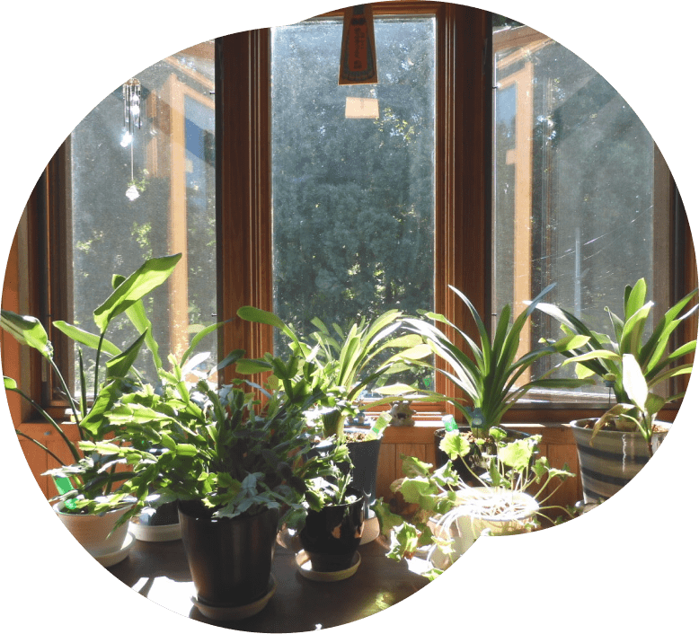
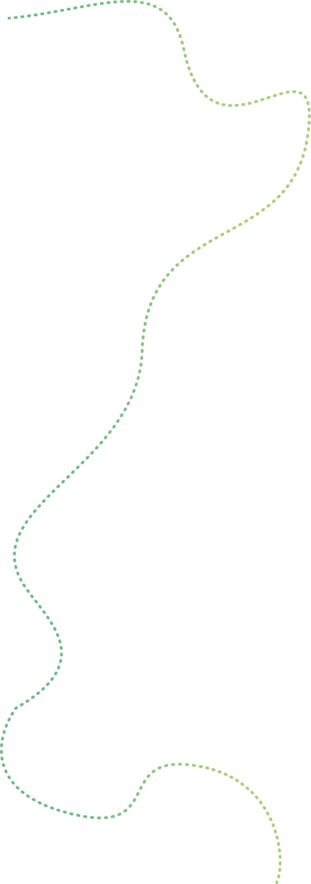
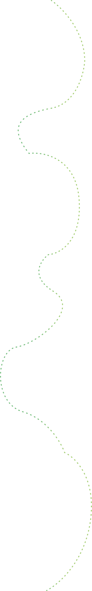
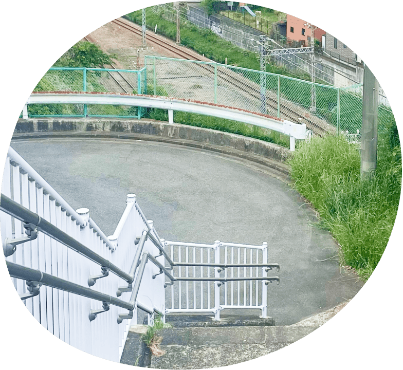
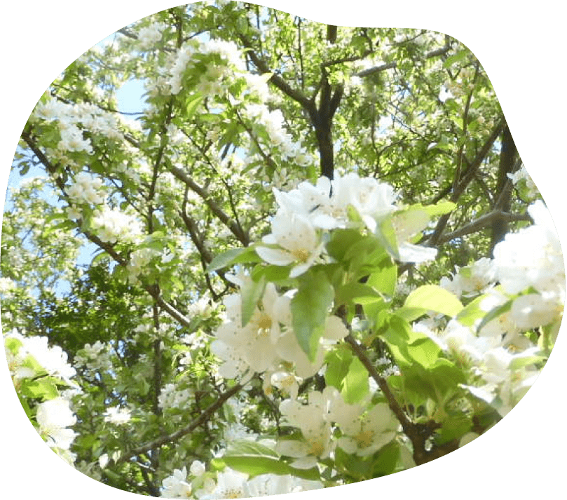
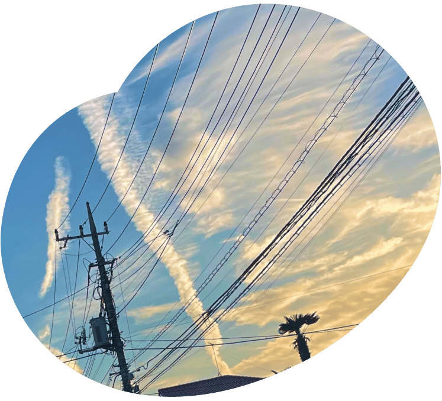
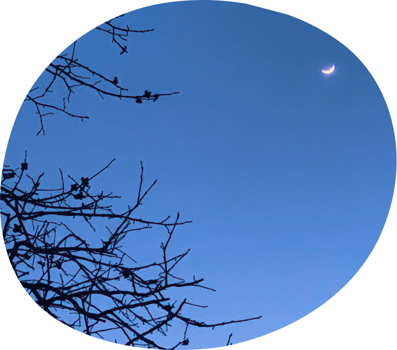
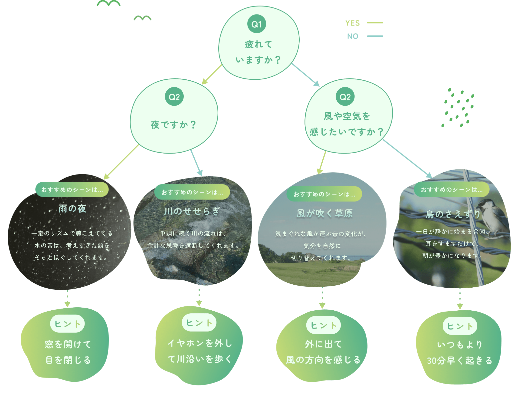
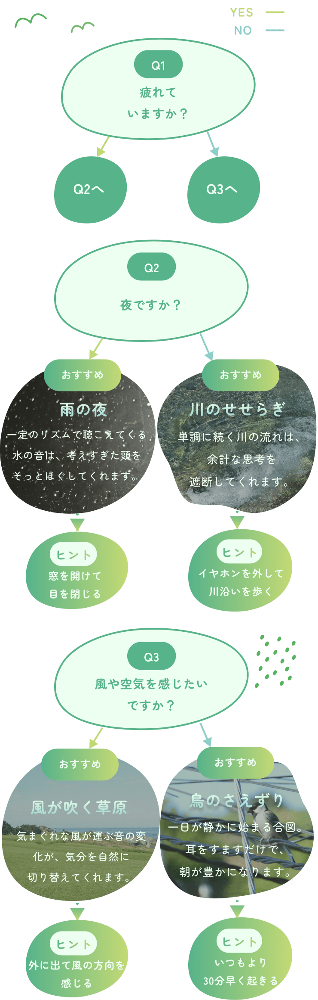

06：00

朝の散歩
目覚めの空気を、耳から味わう 一日のはじまり。
朝から夜まで。5つの場面に、それぞれちょうどよい自然の音があります。



目覚めの空気を、耳から味わう 一日のはじまり。

イヤホンを外した瞬間、 街にも自然の音は流れている。

ベンチに座って数分、 午後の景色が静かに整っていく。

夕暮れとともに現れる生き物たちの音色に 耳を傾ける。

眠る前の数分、遠くで鳴く虫の 声に身をゆだねて。
時間帯だけでなく、その日の気分から選ぶのもひとつの方法。 診断に答えるだけで、ぴったりのシーンが浮かびあがります。


シーンが見つかったら、実際の音にふれてみましょう。